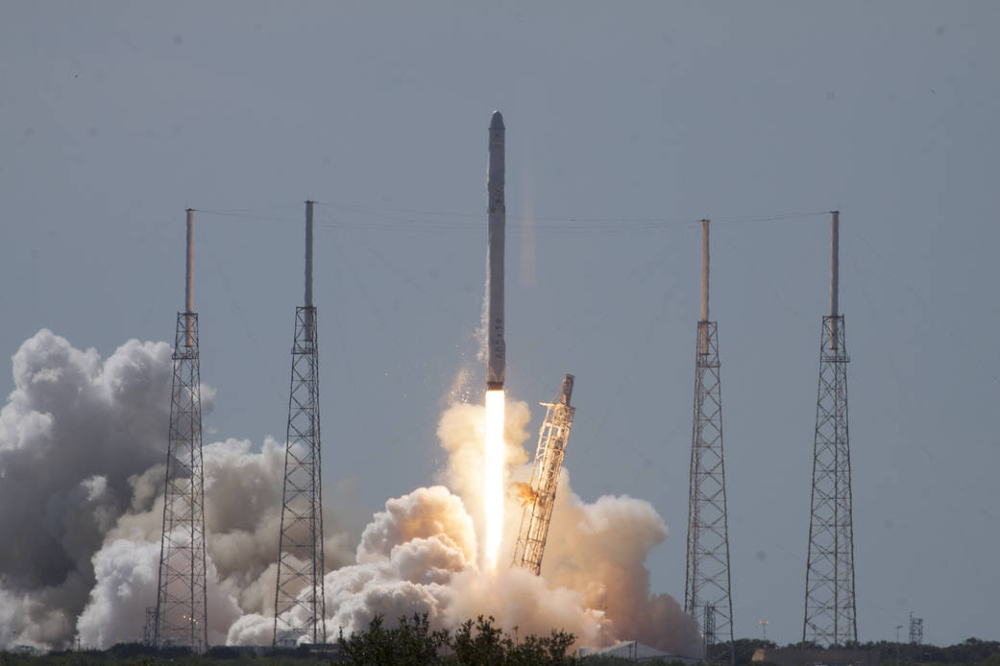
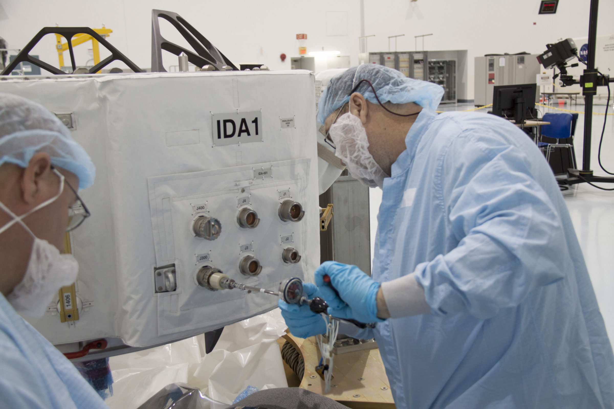
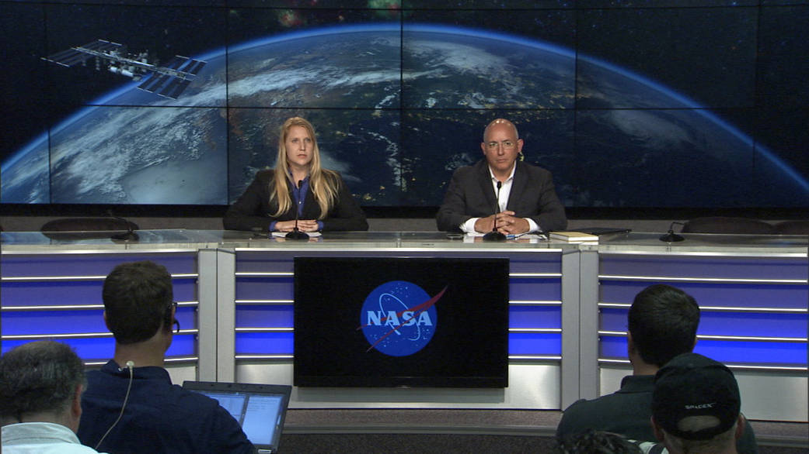
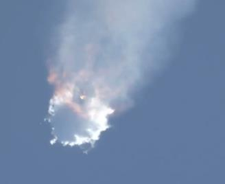

Storia SpaceX · Nona parte · 2015
CRS-7: la perdita, l'indagine e la difficile ripresa
Il 28 giugno il Falcon 9 si disintegra durante la salita. SpaceX perde una missione NASA e deve fermare i lanci. Seguono mesi di indagini, prove e modifiche, mentre clienti e opinione pubblica aspettano una risposta.
Indice Storia SpaceXDue minuti e diciannove secondi
Il 28 giugno 2015, alle 10:21 della Florida, il Falcon 9 lascia il complesso 40 di Cape Canaveral. In cima c'è una Dragon diretta alla Stazione spaziale internazionale: CRS-7, la settima missione operativa del contratto di rifornimento NASA. La partenza avviene all'orario previsto. Il programma comprende l'arrivo alla stazione circa due giorni dopo e il ritorno della capsula, con altro materiale, al termine di una permanenza di diverse settimane. [1]
Per chi segue il lancio, la salita sembra regolare. Poi, intorno al secondo 139, una nube bianca si allarga attorno al razzo. Il veicolo perde la propria integrità e il carico non raggiunge l'orbita. Non è un atterraggio sperimentale andato male: è la perdita della missione principale. Questa differenza conta, perché i tentativi di recupero del primo stadio potevano fallire senza impedire la consegna. Qui viene meno proprio il servizio acquistato dalla NASA. [2]
Non ci sono astronauti a bordo. Ci sono però rifornimenti, strumenti e lavori preparati a terra per mesi, che nessuno sulla stazione potrà ricevere. La parola «anomalia», necessaria nelle prime comunicazioni quando ancora non si conosce la causa, descrive male ciò che significa quel momento per chi ha costruito il razzo o affidato un esperimento a Dragon. Il risultato atteso non è rinviato di qualche ora: quella missione è finita e bisogna stabilire se gli altri Falcon 9 possano volare.

Quello che non arriverà alla stazione
Il carico comprende ricerca scientifica, materiali per l'equipaggio e l'International Docking Adapter 1, sistemato nel vano non pressurizzato di Dragon. Il dossier della missione descrive esperimenti sulla combustione in microgravità, osservazioni delle meteore, coltivazione delle piante e salute degli astronauti. Il trasporto serve anche al lavoro scientifico legato alla permanenza prolungata di Scott Kelly. Dietro l'elenco dei materiali ci sono gruppi di ricerca che hanno preparato attività da svolgere in condizioni non riproducibili normalmente sulla Terra. [1]
L'adattatore IDA-1 non è un semplice ricambio. Deve permettere alle future capsule commerciali con equipaggio di collegarsi alla stazione: riguarda sia SpaceX sia Boeing. La sua perdita colpisce quindi anche il lavoro necessario per riportare astronauti americani sulla ISS con veicoli americani. Sostituirlo richiede un altro componente, una nuova integrazione e un posto su un volo successivo. Non basta trovare spazio per qualche scatola in più. [3]
Ci sono anche esperimenti scolastici. Per studenti e insegnanti il lancio è il momento in cui un progetto preparato in classe diventa una ricerca nello spazio. La distruzione del carico interrompe quel percorso prima che si possa raccogliere un solo risultato in orbita. Mike Suffredini, responsabile NASA della stazione, assicura che l'agenzia lavorerà con gli studenti per far ripartire gli esperimenti su una missione futura. È un impegno concreto, ma non cancella la delusione di chi ha appena assistito alla perdita del proprio lavoro. [4]

La NASA rassicura gli astronauti, non minimizza la perdita
La prima questione è la sicurezza di chi vive sulla ISS. Charles Bolden, amministratore della NASA, dichiara: «Gli astronauti sono al sicuro». Le scorte consentono di proseguire le attività per mesi. Il comunicato conferma il sostegno al trasporto commerciale e annuncia il lavoro comune per capire il guasto, correggerlo e tornare a volare. Non promette che tutto si risolverà rapidamente e non trasforma l'incidente in un successo educativo. Prima bisogna recuperare la capacità perduta. [5]
Il contesto rende l'accaduto ancora più pesante. Nell'ottobre 2014 è fallita una missione di rifornimento con Antares; nell'aprile 2015 è andato perduto un Progress russo. CRS-7 aggiunge un'altra interruzione a una sequenza già difficile. La NASA dispone di una rete internazionale di trasporti, ma quella rete deve essere riprogrammata. Nella comunicazione del 28 giugno indica il prossimo Progress per il 3 luglio e precisa che non c'è un impatto immediato sulle operazioni della stazione. [2] [5]
Essere al sicuro non significa poter ignorare un rifornimento mancato. Le scorte sono state accumulate proprio per assorbire ritardi e guasti; usarle riduce il margine disponibile per il problema successivo. Per questo il tono NASA è insieme rassicurante e fermo. Non c'è ragione di evocare una fuga urgente degli astronauti, ma neppure di dire che Dragon fosse superflua. Una missione di rifornimento serve alla continuità del laboratorio, non soltanto alla sopravvivenza dell'equipaggio.
Le prime risposte non possono essere definitive
Alla conferenza dopo il lancio intervengono NASA, SpaceX e FAA. Gwynne Shotwell partecipa per telefono; per la NASA ci sono Suffredini e William Gerstenmaier, quest'ultimo collegato in video. Il problema viene ricondotto inizialmente al secondo stadio, ma identificare un'area del razzo non significa avere già spiegato il guasto. Le domande riguardano subito le altre missioni, le scorte della stazione e il momento in cui SpaceX potrà ripartire. [6]
Shotwell difende la capacità della squadra di trovare la causa e riprendere i voli in sicurezza. Dice: «Siamo molto fiduciosi nella nostra squadra», riferendosi sia alle operazioni sia ai tecnici. Non è una spiegazione del guasto; è l'impegno pubblico della presidente mentre il veicolo è fermo. Gerstenmaier, per la NASA, indica che quanto emergerà dall'indagine dovrà essere applicato, dove possibile, anche ai progetti futuri. Il sostegno non elimina dunque la necessità di cambiare. [4]
Per l'azienda il compito è difficile anche sul piano pubblico. Deve comunicare abbastanza da non lasciare clienti e NASA senza risposte, evitando di presentare come certa una spiegazione ancora provvisoria. Un'immagine del razzo che si disintegra è immediata e comprensibile; una ricostruzione tecnica richiede dati, confronti e prove. Le due cose arrivano al pubblico con tempi molto diversi.

Un'azienda cresciuta con i successi deve fermarsi
Il 7 luglio Musk definisce la perdita «un durissimo colpo per SpaceX». [15]
Musk non nasconde la gravità dell'incidente. Nelle dichiarazioni di luglio ammette che la lunga serie di risultati positivi può aver attenuato la paura del fallimento. Ricorda una differenza interna: nel periodo degli insuccessi del Falcon 1 SpaceX aveva circa cinquecento dipendenti; nel 2015 ne ha circa quattromila. Molti non hanno vissuto quella fase. Descrive anche le email inviate prima dei lanci, con l'invito a segnalare direttamente eventuali dubbi. Sono parole del fondatore, non una diagnosi indipendente della cultura aziendale. [7]
La sua osservazione tocca comunque un problema reale del lavoro tecnico: un componente che ha funzionato molte volte può smettere di essere oggetto di domande. Il precedente positivo è un dato utile, ma non dimostra da solo che ogni pezzo successivo sia uguale, né che una prova abbia riprodotto tutti i carichi del volo. CRS-7 obbliga a riesaminare anche ciò che sembrava ordinario. Non soltanto le parti più nuove del veicolo, ma le forniture, le verifiche e le condizioni in cui vengono impiegate.
Perdere una missione sotto gli occhi del cliente e non poter dare subito una causa certa è una prova diversa da un problema risolto prima del decollo. Il servizio si ferma; il lavoro, invece, deve continuare. Occorre tornare sui disegni, sui componenti e sulle verifiche di un veicolo che aveva già ottenuto risultati importanti. Ogni risposta pubblica deve reggere al confronto con i dati; ogni modifica deve essere costruita e provata prima che un altro carico venga affidato al razzo.
L'indagine: dalla nube bianca a un supporto interno
SpaceX guida l'indagine prevista per il proprio veicolo, con la supervisione FAA e la partecipazione delle altre istituzioni coinvolte. Non è un'autorizzazione a decidere da sola quando tutto sia risolto. L'azienda deve trovare una spiegazione compatibile con le misure disponibili, individuare interventi correttivi e ottenere le necessarie accettazioni per i voli successivi. Il lavoro comprende il confronto della telemetria, delle riprese e delle prove sui componenti. [2] [8]
Il 20 luglio SpaceX pubblica una spiegazione preliminare. Il sospetto riguarda un supporto, chiamato strut, che mantiene in posizione una bombola di elio all'interno del serbatoio dell'ossigeno liquido del secondo stadio. L'azienda riferisce che il componente sospettato era progettato e certificato per 10.000 libbre-forza, ma avrebbe ceduto a circa 2.000. La differenza è enorme; resta però un risultato dell'analisi preliminare, non la misura diretta di un pezzo recuperato integro dal volo. [8]
L'elio serve alla pressurizzazione. La bombola lo contiene ad alta pressione ed è immersa in un liquido molto più denso. I supporti non sono accessori: devono impedirle di muoversi. Se un vincolo cede, il sistema può perdere la propria integrità e il gas può entrare dove non deve, provocando una sovrapressione. Il secondo stadio non ha ancora consumato il suo propellente; il volume disponibile per il gas è limitato. L'aggiornamento SpaceX collega il cedimento del supporto a una rapida perdita strutturale dello stadio. [8]
Spiegare il meccanismo non equivale ancora a spiegare tutta la responsabilità. Sono due domande diverse: che cosa si è rotto, e perché un pezzo capace di rompersi in quelle condizioni è arrivato sul razzo? La seconda riguarda scelta del componente, requisiti, fabbricazione, installazione e controlli. Fermarsi alla prima può portare a sostituire una parte senza correggere il processo che l'ha accettata.
La revisione NASA: non soltanto un pezzo difettoso
La sintesi della revisione indipendente NASA, pubblicata il 12 marzo 2018, conferma la rottura del serbatoio dell'ossigeno del secondo stadio e considera credibile il distacco della bombola. Non assegna però al difetto del materiale una probabilità superiore alle altre cause plausibili di cedimento del supporto. Contesta inoltre l'impiego di un terminale in acciaio di grado industriale in una posizione critica, a temperature criogeniche, senza verifiche adeguate. La definisce un errore di progettazione. [9]
È una distinzione sostanziale. La formula «il fornitore ha consegnato un pezzo difettoso» non esaurisce la vicenda. Chi progetta il razzo deve stabilire se quel pezzo sia adatto all'impiego e come verificarlo. La certificazione del materiale, da sola, non garantisce che il componente sia stato qualificato per tutte le condizioni in cui lavorerà.
La data del rapporto non va confusa con quella degli interventi. La NASA precisa che le cause credibili e i rilievi tecnici erano stati corretti o mitigati per Jason-3, nel gennaio 2016. La pubblicazione del 2018 è una lettura retrospettiva, non una notizia che i clienti potevano conoscere nel luglio 2015. [9]

Le modifiche: sostituire, controllare, preparare il recupero
SpaceX annuncia che non userà più quei particolari supporti per i voli e che estenderà gli audit sulla qualità dell'hardware ricevuto. Musk aggiunge che i supporti saranno sottoposti a verifiche individuali. La conseguenza pratica è semplice: il documento del fornitore non basta più a far accettare automaticamente quel componente. La nuova procedura comporta altro lavoro prima dell'installazione. [8] [7]
Il problema dei controlli merita attenzione anche fuori da CRS-7. Una prova può dimostrare che un motore si accende e che lo stadio funziona nelle condizioni del banco, senza sottoporre ogni supporto interno alle stesse sollecitazioni del volo. Non è una contraddizione: ogni prova risponde a domande precise. Dopo un incidente bisogna controllare se le domande poste prima del lancio fossero sufficienti, non soltanto ripetere meglio le medesime verifiche.
Dragon apre un altro fronte. La capsula sopravvive alla prima parte dell'incidente, ma il software della versione cargo non è predisposto per comandare i paracadute in quella specifica emergenza durante la salita. Musk annuncia una modifica per consentirne l'apertura in casi simili. La possibilità di salvare capsula e carico diventa quindi una lezione operativa, non soltanto un rimpianto. Non è però corretto trasformare quella possibilità nella certezza che tutto il materiale sarebbe stato recuperato intatto. [10]
Non bisogna neppure confondere Dragon cargo con un veicolo già autorizzato al trasporto di astronauti. La sicurezza dell'equipaggio richiede sistemi, prove e certificazioni propri. CRS-7 fornisce informazioni importanti anche per quel programma, ma una modifica ai paracadute non esaurisce la questione. Per un volo umano occorre prevenire il guasto e, se accade, dare alle persone una possibilità concreta di salvarsi.
Le critiche: affidabilità, responsabilità e qualche semplificazione
La stampa non si limita a raccontare la perdita del carico. Il fallimento offre materia per discutere il modello commerciale scelto dalla NASA e la credibilità di SpaceX. Su TIME, Jeffrey Kluger collega i ripetuti problemi dei rifornimenti alla fiducia nel passaggio ai fornitori privati. Il testo presenta però Musk come se incontrasse per la prima volta un grave fallimento di lancio: una rappresentazione che trascura i tre insuccessi iniziali del Falcon 1. [11]
Quell'errore non rende illegittima la domanda sull'affidabilità del Falcon 9. Mostra piuttosto quanto facilmente una vicenda industriale venga ridotta al percorso personale del fondatore. SpaceX non è soltanto Musk, e CRS-7 non è soltanto una prova del suo carattere. Ci sono un contratto pubblico, una catena di fornitori, decisioni tecniche e un cliente che deve continuare a rifornire la stazione. È su questi aspetti che la critica diventa utile.
La copertura tecnica non è tutta ostile. Il 20 luglio Amy Thompson, su Ars Technica, richiama esplicitamente il carattere preliminare della spiegazione presentata da Musk. [10] Trattare ogni domanda come un attacco sarebbe comodo per l'azienda, ma scorretto verso il lettore. Chiedere perché un componente abbia ceduto, chi abbia approvato il suo uso e quali prove vengano aggiunte è precisamente ciò che un incidente del genere richiede.
La critica più impegnativa non arriva necessariamente da un titolo di giornale. Nel 2016 l'ispettorato NASA contesta la mancanza di una politica d'indagine commerciale uniforme e l'indipendenza del gruppo guidato da SpaceX, osservando che undici dei dodici membri votanti appartenevano all'azienda. Non denuncia per questo una falsificazione dei risultati: indica un problema di struttura e controllo. [12]
Il sostegno pubblico della NASA e i rilievi dei suoi organismi di controllo possono convivere. Continuare a usare fornitori commerciali non significa rinunciare a esaminarli. Per SpaceX la fiducia non consiste nell'assenza di contestazioni: consiste nella disponibilità del cliente a proseguire, una volta affrontate le cause e verificati gli interventi.
Il danno finanziario: tre conti diversi
La cifra più solida riguarda il carico NASA distrutto: 118 milioni di dollari nella valutazione dell'ispettorato del giugno 2016. Non è il costo complessivo dell'incidente per SpaceX. Il rapporto chiarisce inoltre che l'azienda perde il 30 per cento finale dei pagamenti legati alle tappe della missione. La NASA negozia compensazioni sotto forma di hardware, integrazione, flessibilità e prezzi scontati per missioni successive. Non annulla l'intero rapporto contrattuale. [12]
Il secondo conto riguarda il veicolo, il lavoro d'indagine e gli interventi necessari per ripartire. Sono attività che assorbono risorse mentre il lanciatore non produce il servizio atteso. Il terzo riguarda il calendario commerciale: missioni rinviate, incassi spostati e possibilità di lavorare per nuovi clienti. Sommare queste voci senza sapere come siano contabilizzate porta facilmente a una cifra appariscente ma poco significativa.
Musk, a luglio, parla di mancati ricavi potenzialmente nell'ordine delle centinaia di milioni di dollari dovuti ai ritardi. È una stima del vertice aziendale, non un bilancio certificato della perdita netta causata da CRS-7. [7] Un pagamento rinviato non è necessariamente un contratto perduto; un razzo e un carico distrutti, invece, non tornano disponibili quando riprende il calendario. I due effetti economici vanno tenuti distinti.
SpaceX deve anche evitare una risposta che comprometta il servizio futuro. Ridurre i controlli per recuperare qualche settimana renderebbe più rapida la ripartenza soltanto sulla carta. Un secondo incidente prima di aver chiarito il primo avrebbe conseguenze ben diverse da un rinvio. D'altra parte, non si può sospendere indefinitamente l'attività in attesa di una certezza assoluta che nessun sistema complesso offre. La decisione di tornare a volare deve poggiare su rischi compresi e interventi verificati.
Preparare un ritorno che convinca i clienti
Durante l'estate le previsioni di ripresa restano provvisorie. Intanto prosegue la preparazione del Falcon 9 Full Thrust. Il potenziamento del lanciatore era già in sviluppo prima di CRS-7: non è corretto presentarlo come una versione inventata per eliminare il guasto. Miglioramenti delle prestazioni e correzioni dell'incidente arrivano nello stesso periodo, ma hanno origini diverse. [13]
In ottobre viene scelto ORBCOMM-2 per il ritorno al volo, al posto del previsto SES-9. C'è una ragione tecnica dichiarata: la consegna degli undici satelliti ORBCOMM in orbita bassa non richiede la riaccensione del secondo stadio necessaria alla missione geostazionaria. SpaceX potrà provarla dopo aver separato i satelliti, senza far dipendere la loro consegna da quella prova supplementare. La scelta viene concordata con i clienti. [13]
Il senso della preparazione è ottenere un successo completo della missione e ristabilire una base credibile per i voli successivi. Questa è una lettura delle decisioni documentate, non una frase attribuita a Musk. Non basta che il razzo torni a decollare: deve consegnare il carico previsto, validare la configurazione e permettere ai clienti in attesa di programmare il proprio lavoro. Il primo obiettivo resta il servizio, prima dell'effetto pubblico del lancio.
A novembre ORBCOMM indica dicembre come periodo raggiungibile, subordinandolo al buon andamento dei preparativi SpaceX. [14] Si arriva così alla vigilia del ritorno al volo. La perdita di giugno non è stata cancellata: sono stati individuati scenari di guasto, introdotte modifiche e rivisti controlli. La fiducia dovrà essere confermata in volo. Il primo atterraggio del Falcon 9 avrà un capitolo proprio; qui il punto è il lavoro, meno spettacolare ma necessario, che ha reso possibile riprovare.
Resta una precisazione: il permesso di ripartire non coincide con la conclusione di ogni revisione NASA. L'ispettorato rileverà che la FAA autorizzò il ritorno di dicembre senza avere ricevuto il rapporto finale del Launch Services Program. [12] Per raccontare correttamente quei mesi bisogna distinguere la risoluzione del guasto necessaria al volo, l'accettazione del rischio e la chiusura documentale delle diverse indagini. Nessuna di queste fasi può essere sostituita da una dichiarazione di fiducia.
Fonti e documenti
Ricerca e revisione editoriale: 9 ottobre 2026. Il racconto distingue dichiarazioni del 2015, valutazioni successive e interpretazione editoriale. Le brevi citazioni sono tradotte in italiano. Le fonti non sono tutte concordi sulla causa iniziale del cedimento.
- [1] SpaceX/NASA, CRS-7 Mission Press Kit, giugno 2015. Programma previsto, carico scientifico, Dragon e missione.
- [2] NASA, CRS-7 Status, 28 giugno 2015. Stato della ISS, tempi dell'incidente e ruoli nell'indagine. La rampa corretta è SLC-40, confermata dal dossier e dalla scheda fotografica; il riferimento a SLC-41 nel testo del blog è un refuso.
- [3] NASA, Meet the International Docking Adapter. Funzione degli adattatori e collegamento con Commercial Crew.
- [4] NASA, archivio SpaceX del giugno 2015. Intervento di Suffredini sul rilancio degli esperimenti scolastici; la vecchia pagina d'archivio può reindirizzare al sito NASA attuale.
- [5] Charles Bolden, dichiarazione NASA sulla perdita di CRS-7, 28 giugno 2015.
- [6] NASA, conferenza dopo il lancio, 28 giugno 2015; scheda NASA dei partecipanti.
- [7] Stephen Clark, Spaceflight Now, 20 luglio 2015. Dichiarazioni di Musk sui dipendenti, verifiche individuali e mancati ricavi; la pagina conserva anche l'audio della conferenza.
- [8] SpaceX, CRS-7 Investigation Update, 20 luglio 2015, copia conservata dalla NASA. Estratto contemporaneo nel blog NASA. Conclusioni preliminari e controlli aggiuntivi; il PDF può risultare temporaneamente bloccato dal server.
- [9] NASA Independent Review Team, Public Summary, 12 marzo 2018. Distinzione rispetto alla causa iniziale proposta da SpaceX, errore di progettazione e stato delle correzioni.
- [10] Amy Thompson, Ars Technica, 20 luglio 2015. Resoconto delle dichiarazioni sui paracadute di Dragon e natura preliminare dei risultati.
- [11] Jeffrey Kluger, TIME, 28 giugno 2015. Commento sull'impatto del fallimento sul trasporto commerciale, esaminato criticamente nel testo.
- [12] NASA Office of Inspector General, IG-16-025, 28 giugno 2016. Valore del carico, pagamenti contrattuali, compensazioni e indipendenza delle indagini. Il percorso web del PDF non ne indica la data di pubblicazione.
- [13] Spaceflight Now, 18 ottobre 2015. Dichiarazione SpaceX sulla scelta di ORBCOMM, commenti del cliente e sviluppo preesistente del Full Thrust.
- [14] Spaceflight Now, 6 novembre 2015. Previsioni del cliente ORBCOMM e preparazione della missione.
- [15] William Harwood, CBS News, 7 luglio 2015.
Fotografie e riutilizzo
Quattro immagini storiche, senza ricostruzioni generate: decollo, IDA-1, conferenza e fotogramma dell'incidente. Crediti nelle didascalie e nel registro delle immagini. Uso informativo secondo le linee guida NASA, senza implicare approvazione dell'agenzia.